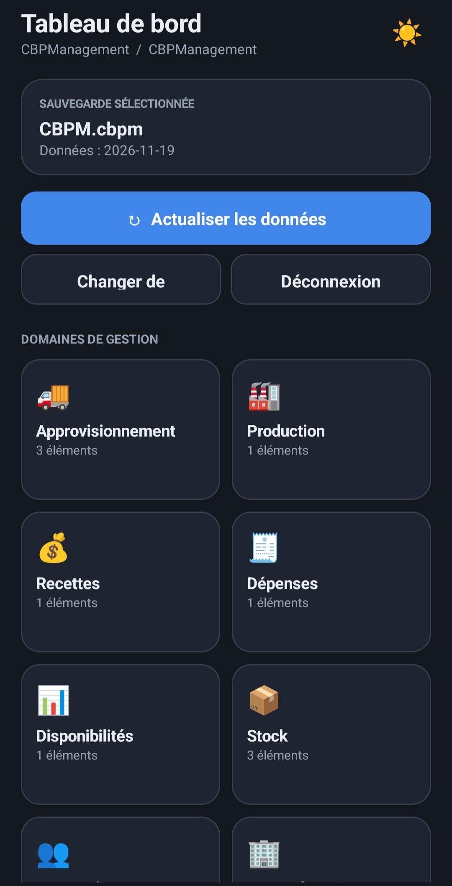

📈
Tableau de bord & activité
Une synthèse de l’activité pour suivre rapidement les principaux indicateurs.
- Production du jour
- Approvisionnements et services du jour
- Recettes, dépenses et disponibilité
- Indicateurs et synthèses
CBPManagement réunit les opérations, la production, les stocks, les finances et le suivi commercial dans une solution de gestion pensée pour les professionnels du béton prêt à l’emploi.
Une solution de bureau et un accès mobile à vos sauvegardes.
Une vision structurée de vos données et de vos opérations.
Une organisation claire pour suivre chaque étape de l’activité de votre centrale.
Une synthèse de l’activité pour suivre rapidement les principaux indicateurs.
Organisez les productions et gérez les compositions de vos produits finis.
Suivez les entrées de matières premières, les achats et les services.
Centralisez les mouvements financiers et consultez les situations.
Gardez une vue claire sur les tiers et leurs soldes.
Préparez et suivez les documents commerciaux liés à votre activité.
Centralisez les informations relatives aux ressources de la centrale.
Analysez les données et consultez les rapports de suivi.
Protégez vos données et adaptez l’application à votre organisation.
CBPManagement rassemble les informations importantes de votre centrale dans un environnement unique. Vous passez d’un module à l’autre pour suivre les opérations sans disperser vos données.
L’application Android complète l’application de bureau en vous permettant d’accéder aux sauvegardes associées à votre compte CBPManagement.


Retrouvez vos principaux indicateurs et les modules de gestion depuis un espace de travail unique.

Téléchargez CBPManagement pour votre appareil.
Application de gestion pour ordinateur Windows. Installeur disponible depuis GitHub Releases.
↓ Télécharger pour WindowsApplication Android compagnon pour accéder aux sauvegardes CBPManagement.
↓ Télécharger l’APK AndroidUne question sur CBPManagement ? Envoyez-nous un message.